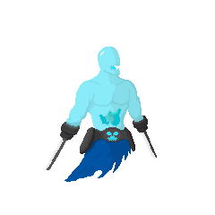

Rever
Rever was born in a small village in the outskirts of Valatoria. From a young age, he showed a natural talent for fencing. His father, who was a retired soldier, recognized his son's gift and began to train him in the art of fencing.
Rever was a quick learner and soon surpassed his father's skills. He spent countless hours practicing his moves and perfecting his technique. Over time, he became one of the best fencers in the region.
But Rever was not content with just being good. He wanted to be the best. He traveled across Lacum, seeking out other fencers and learning from them. He studied different styles and techniques, incorporating them into his own unique style.
As he traveled, Rever also encountered many challenges. He faced bandits, wild animals, and treacherous terrain. But he refused to give up. He knew he had to keep pushing himself to become even better.
One day, Rever learned about Vuelo's plans to destroy the world. He knew he had to act. He set out on a dangerous journey to confront Vuelo and put a stop to his evil scheme.
The battle was long and grueling, but Rever emerged victorious. He saved the world and became a hero in the eyes of the people. But even after that, Rever never stopped striving to improve his skills. He continued to train and hone his abilities, always seeking to be the best fencer he could be.
Rever's determination and willpower made him a true hero. He proved that with hard work and dedication, anything is possible.

Vuelo
Vuelo was once a powerful and respected wizard in the kingdom of Lacum. He was renowned for his wisdom and his ability to wield magic. However, over time, Vuelo became obsessed with power and began to delve into darker forms of magic.
As he continued to explore these forbidden arts, Vuelo's mind became twisted and corrupted. He began to see himself as a god, with the power to control and bend the world to his will.
Vuelo eventually turned to dark magic to achieve his goals. He summoned forth an army of monsters and began to lay waste to the lands of Lacum, seeking to destroy anyone who stood in his way.
The people of Valatoria were terrified of Vuelo and his army. They knew they needed a hero to save them from his wrath. But no one seemed to have the power to stop him.
As Vuelo continued his rampage, he grew increasingly powerful. He not only wielded dark magic, but he was also a skilled swordsman who could use dual swords with deadly precision.
Despite his formidable skills, Vuelo's lust for power eventually led to his downfall. He became so consumed by his ambition that he lost all sense of morality and became a ruthless, evil entity.
In the end, however, Vuelo was defeated by Rever, a skilled fencer who was determined to save the world from his destructive plans. Rever's quick reflexes and agility allowed him to dodge Vuelo's dual swords and strike back with deadly force, ultimately defeating him.
Despite his defeat, Vuelo's legacy lived on as a cautionary tale about the dangers of unchecked ambition and the corrupting influence of power.
Slime
Slime is a product of one of Vuelo's failed magic experiments. Vuelo was attempting to create a powerful monster, but instead, he ended up with a small, weak creature with a gelatinous body and the ability to dissolve and absorb matter.
Despite its lack of physical strength, Slime can be a formidable opponent due to its ability to absorb and use the properties of whatever it dissolves. It is often used by Vuelo as a tool to weaken his enemies and gain an advantage in battle.
However, Slime is not entirely loyal to Vuelo. It has been known to turn on its master when it sees an opportunity to gain power for itself. As a result, it is often a wildcard in battles, and its true motives are difficult to predict.
Wizard
Wizard is an adherent of Vuelo who shares his master's love of dark magic and lust for power. He is a skilled magician who has mastered many different spells and incantations.
Wizard is often tasked with carrying out Vuelo's orders and helping him achieve his goals. He is a cunning strategist who is not afraid to use underhanded tactics to achieve victory.
However, Wizard is not entirely without a conscience. He has been known to question some of Vuelo's more extreme actions and has even considered defecting from his master's service on occasion.
Despite his doubts, however, Wizard remains loyal to Vuelo and is willing to do whatever it takes to help him achieve his goals, no matter how dark or dangerous they may be.